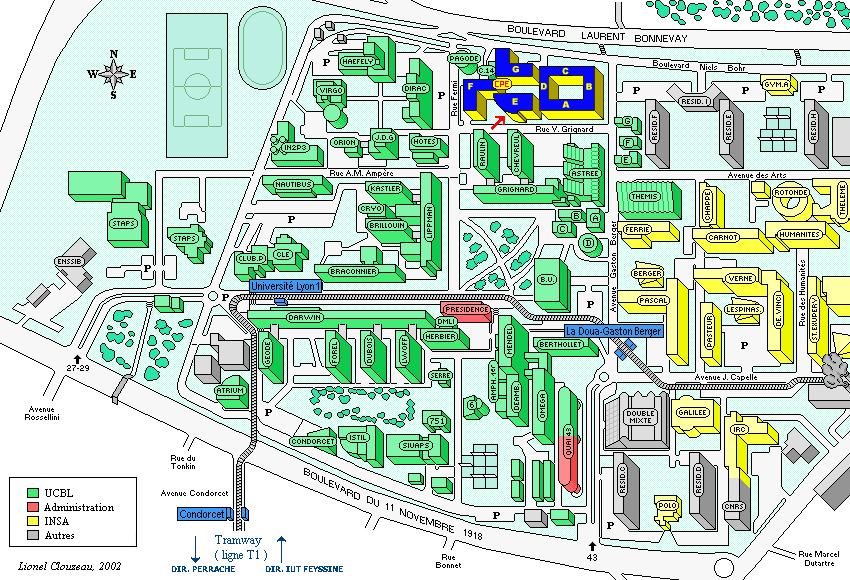

- Accueil
- Nouvelles
- Programme
- Projets
- Wiki
- Sponsors
- Presse
- Comment venir
- Hébergement
- Inscription
- Contacts

Le Libre Graphics Meeting se tiendra sur le campus universitaire de La Doua, à Villeurbanne, près de Lyon.

L'aéroport de Lyon est Lyon-Saint Exupéry (LYS). De là, vous pouvez rejoindre le centre-ville par le bus « Satobus » qui vous emmènera à la gare Perrache. Prenez ensuite le tramway T1 pour le campus. L'arrêt le plus proche est « Gaston Berger » (voir la carte ci-dessus).
Il y a deux gares importantes dans Lyon : Perrache et La Part-Dieu. Vous pouvez prendre le tramway T1 pour le campus depuis chacune d'elle.
Depuis l'arrêt "Gaston Berger", pour aller à CPE Lyon, il suffit de suivre ce chemin en photos :


À partir de là, vous devriez trouver votre chemin vers l'accueil, sinon appelez David Odin (DindinX) au +33 472446211